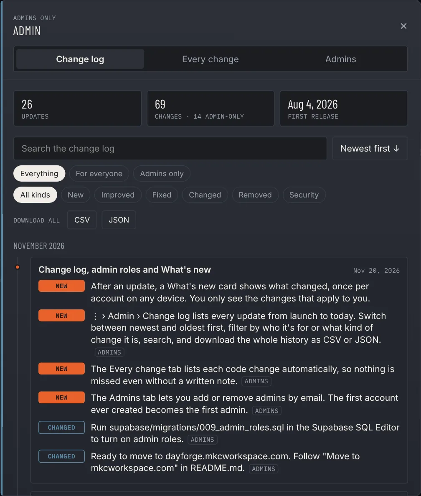
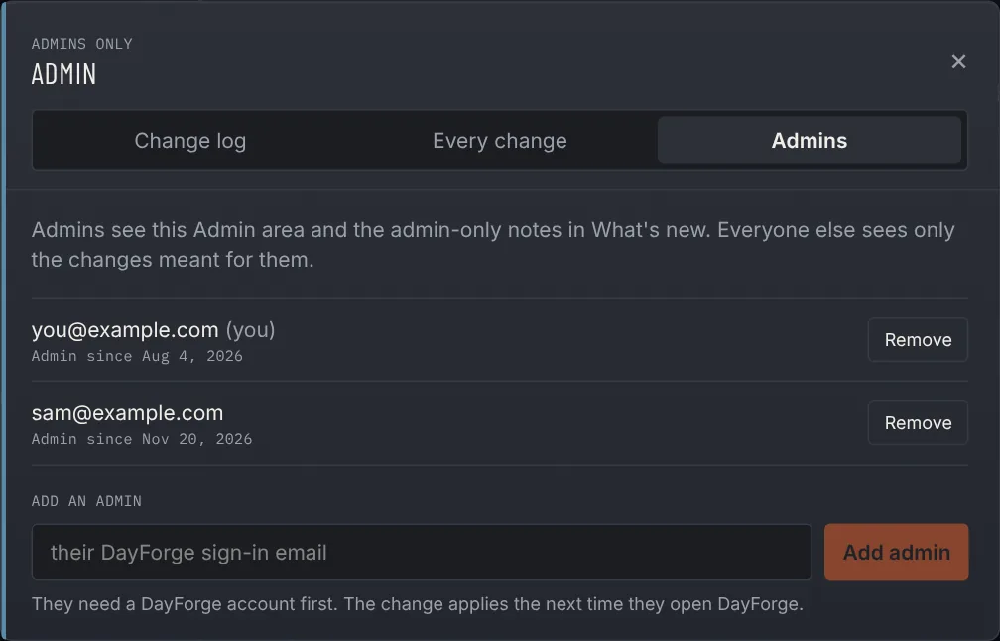
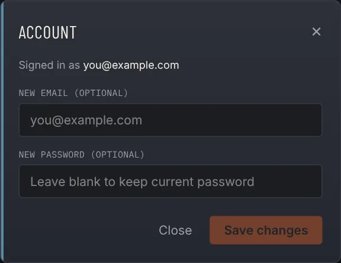

DayForge appdayforge.mkcworkspace.com on Vercel, built from GitHub: mkp-tools › dayforge
→
SupabaseSign-in, your data, private file storage
Admins are the accounts on the admin list. The first account ever created is the first admin. Admins get ⋮ › Admin and the admin notes in What's new.

1234
Owner / admin
The change log
⋮ › Admin › Change log has every update from launch to today. Every change lists each code change automatically, so nothing is missed.
Change log, Every change, Admins.
Newest or oldest first.
Everything, for everyone, or admin-only.
Download the whole history as CSV or JSON.

123
Owner / admin
Admins
Add or remove admins by email. They need a DayForge account first, and the last admin can't be removed.
An admin and when they became one.
Their DayForge sign-in email.
Add admin.

12
Owner / admin
Account and sign-in
Change the email or password from ⋮ › Account settings. Once your account exists, switch off “Allow new users to sign up” in Supabase › Authentication › Sign In / Providers.
New email: a confirmation link finishes the change.
New password: leave blank to keep the current one.
Owner / admin
Publishing an update
Commit to GitHubmain branch, dayforge folder
→
Vercel publishesUsually within a minute or two
→
Refresh devices⋮ › Refresh app
If a release goes wrong, Vercel › Deployments › Instant Rollback puts the last good version back. Your data in Supabase isn't affected.
Owner / admin
Database updates
SQL EditorSupabase › the DayForge project
→
New queryPaste the whole .sql file
→
Run“Success. No rows returned”
Some features need a one-time database change, shipped as numbered files in dayforge/supabase/migrations. Run each one once, in order. Note labels need 008_note_labels.sql; admin roles need 009_admin_roles.sql.
Owner / admin
This guide keeps itself current
Push an updateAny change to the app
→
Screenshots retakenAn automatic GitHub job rebuilds the guide and this tour
→
Change logAdd a release to dayforge/CHANGELOG.md. [Admins] lines reach admins only
Each person sees new releases once, as What's new. If a button the guide points at is renamed or removed, the job stops and GitHub emails you, so the guide never quietly goes out of date.
Owner / admin · done
You're set.
Those are the owner's jobs. The full guide's Admin section has the step-by-step details and a troubleshooting table.